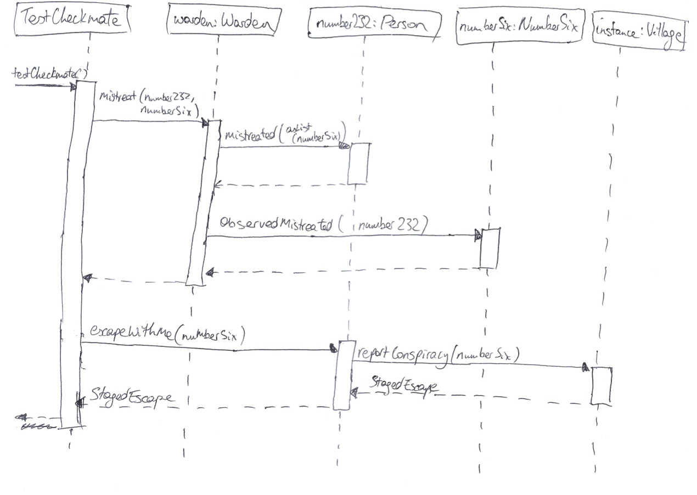
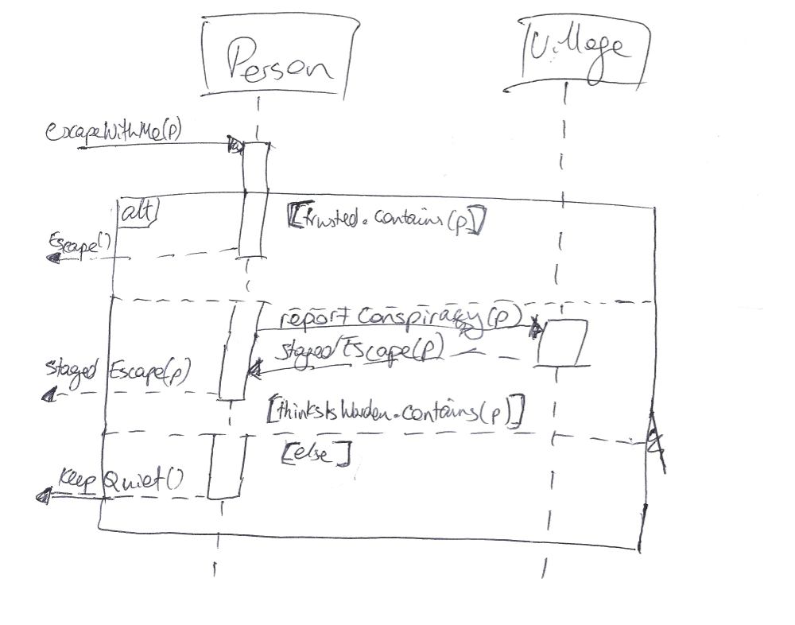
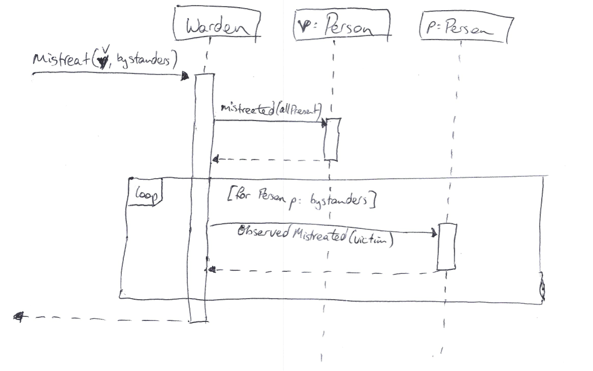

Tutorial Week 11 Sample Solutions
Checkmate
- Read and run the tests in the
TestCheckmate class. See that they pass -- and that Number Six yet again has not managed to escape.
- Draw a UML Sequence Diagram of the
TestCheckmate.testCheckmate method -- include as much information as you can. Your diagram should show the story of why Number Six's plan this week fails.

- Draw a UML Sequence Diagram of the
Person.escapeWithMe(Person p) method -- include as much information as you can. Note that this time, you don't know which path the branches will take.

- Draw a UML Sequence Diagram of the
Warden.mistreat(Person p, List<? extends Person> bystanders) method -- include as much information as you can. Note that this time, you will need to show the loop.

Code Coverage
- Read the code of the
Village.couldConspire(asked, asking) method. Also have a look at the tests in the TestVillage class.
- public Response couldConspire(Person asked, Person asking) {
- Response result = null;
- if (asked.trusts(asking)) {
- result = new Escape();
- }
- if (asked.thinksIsWarden(asking)) {
- result = new StagedEscape(asking);
- }
- if (result == null) {
- result = new KeepQuiet();
- }
- return result;
- }
testCase1 will test for when asked.trusts(asking) returns true and asked.thinksIsWarden(asking) returns false.
testCase2 will test for when asked.trusts(asking) returns false and asked.thinksIsWarden(asking) returns true.
- Which statements are not covered by the tests? Write additional test cases (like
TestVillage.testCase1 and TestVillage.testCase2) to cover those statements.
testCase1 will enter into the if statement beginning on line 3, but not into either of the statements beginning on lines 6 and 9.
testCase2 will enter into the if statement beginning on line 6, but not into either of the statements beginning on lines 3 and 9.
So, line 10 is not covered, since that if statement is never entered in the tests. testCase3 below will cover that statement, by testing the method for when asked.trusts(asking) and asked.thinksIsWarden(asking) both return false.
- @Test
- public void testCase3() {
- Mockito.when(asked.trusts(asking)).thenReturn(false);
- Mockito.when(asked.thinksIsWarden(asking)).thenReturn(false);
- assertSame(KeepQuiet.class, Village.INSTANCE.couldConspire(asked, asking).getClass());
- }
- Which branches are not covered by the tests? Write additional test cases to cover those statements.
For the if statement on line 3, the true case is covered by testCase1, and the false case by testCase2.
For the if statement on line 6, the true case is covered by testCase2, and the false case by testCase1.
For the if statement on line 9, the true case is covered by testCase3, and the false case by both testCase1 and testCase2.
So, all the branches are covered by these three tests.
- Which execution paths are not covered by the tests? Write additional test cases to cover those statements.
The execution path can vary on lines 3, 6, and 9, depending on whether the conditions are true or false. The following execution paths are possible:
- true on line 3, true on line 6, false on line 9. This is not being covered.
- true on line 3, false on line 6, false on line 9. This is covered by
testCase1. - false on line 3, true on line 6, false on line 9. This is covered by
testCase2. - false on line 3, false on line 6, true on line 9. This is covered by
testCase3.
Note that the result of the condition on line 9 is determined by the results of lines 3 and 6, not by the inputs. testCase4 below will cover the "true, true, false" path.
- @Test
- public void testCase4() {
- Mockito.when(asked.trusts(asking)).thenReturn(true);
- Mockito.when(asked.thinksIsWarden(asking)).thenReturn(true);
- assertSame(StagedEscape.class, Village.INSTANCE.couldConspire(asked, asking).getClass());
- }
Remark: To demonstrate why path coverage is important (at least to some extent), note that if we rewrite the couldConspire method to swap the order of lines 3-5 and 6-8, then test cases 1, 2, and 3 will still pass, and those three will still provide full statement and branch coverage, but test case 4 fails.